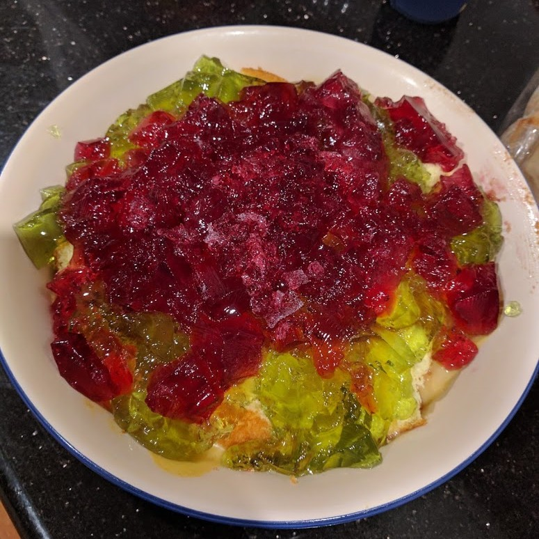

Trifle
 Meat
Meat
It’s not Christmas if you don’t make a trifle.

3 platesof jelly
Make the jelly and set overnight
- 2 sponge cakes or jam rolls
Cut up cake into cubes in big bowl
- custard (8 cups of milk)
Add custard on top and put in fridge until cool
Cut up the jelly and add on top (next day)